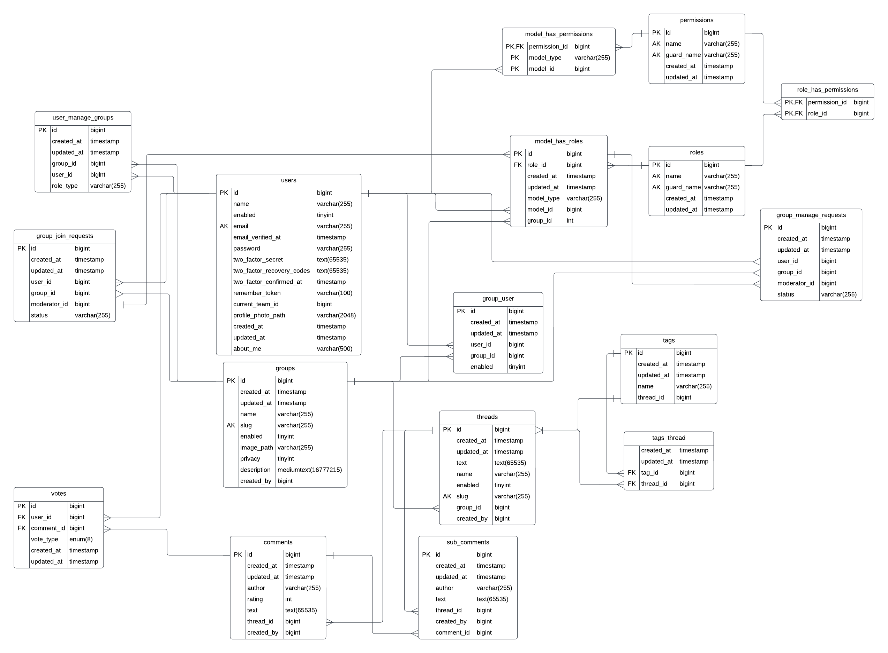

Sociální sí»
- Autoøi
V¹echny kroky implementace byly konzultovány na pravidelných poradách.
- Adam Kala -
xkalaa00@stud.fit.vutbr.cz
- Dokumentace
- Návrh
- Analýza
- Frontend (AlpineJS, Tailwind)
- Backend (PHP-Laravel)
- Michal Wagner -
xwagne12@stud.fit.vutbr.cz
- Dokumentace
- Návrh
- Analýza
- Frontend (AlpineJS, Tailwind)
- Backend (PHP-Laravel)
- Filip Pøichystal -
xprich09@stud.fit.vutbr.cz
- Dokumentace
- Návrh
- Analýza
- Databáze (MariaDB)
- Backend (PHP-Laravel)
- URL aplikace
- https://projektfit.unknown.agency/
Pokud je potøeba resetovat data aplikace pomocí seeds. Mù¾eme pou¾ít pøíponu /seed (https://projektfit.unknown.agency/seed), která nám uvede aplikaci do pùvodního stavu.
U¾ivatelé systému pro testování
| Jméno | E-mail | Heslo | Role |
|---|
| Admin | admin@admin.com | admin | Administrátor, Správce skupiny (Facebook) |
| Tester | tester@tester.com | tester | Správce skupiny (Sportovní nad¹enci, Web developers), Èlen skupiny (Srandièky tvojí tetièky) |
| Pepa | pepa@seznam.cz | 123456789 | Správce skupiny (Srandièky tvojí tetièky) |
| Ema | emaishere@gmail.com | ema123456 | Správce skupiny (Let's hear your opinions), Èlen skupiny (Facebook) |
| Fanda | fanda@gmail.com | fanda123456 | Registrovaný u¾ivatel |
| Marek | marek@gmail.com | marek123456 | Moderátor skupiny (Let's hear your opinions) |

Video
Odkaz na video
Implementace
Backend
Systém je implementován v jazyce PHP za pou¾ití frameworku Laravel. Pro systém øízení báze dat je pou¾it MySQL konkrétnì MariaDB.
Frontend
Frontend je implementován pomocí tailwind a Laravel livewire automaticky poskytuje AlpineJS integraci.
Popis implementace
Projekt je implementovaný podle modelu MVC.
Model jsou soubory pracující s databází.
Èást View pøedstavují soubory s pøíponou .blade.php. Soubory obsahují zobrazení stránek.
Díky vyu¾ití Laravel Livewire vyu¾ití Controllerù nebylo potøeba.
Vytvoøení databáze zaji¹»ují migrace.
Pøihlá¹ení u¾ivatelé jsou automaticky odhlá¹ení po 120 minutách neèinnosti.
Databáze
Návrh databáze:
Databáze se skládá z následujících navzájem propojených tabulek:
- users - obsahuje informace o u¾ivatelovi jako jeho jméno, e-mail, heslo, viditelnost a dal¹í
- groups - obsahuje informace o skupinì jako její jméno, slug, popis, viditelnost a dal¹í
- threads - obsahuje informace o vláknu jako jeho jméno, text, slug, viditelnost a dal¹í
- comments - obsahuje informace o pøíspìvku jako jeho autora, text, hodnocení a dal¹í
- sub_comments - obsahuje informace o komentáøi pøíspìvku jako jeho autora, text a dal¹í
- votes - obsahuje informace o hlasu jako jeho typ(upvote, downvote) a dal¹í
- roles - obsahuje informace o roli jako její název a dal¹í
- tags - obsahuje informace o tagu jako jeho název a dal¹í
- tags_thread - mezitabulka spojující vlákno a tag, která se pou¾ívá pro tagy ve vláknech
- group_user - obsahuje informace o u¾ivateli ve skupinì jako jeho id a dal¹í
- model_has_roles - mezitabulka spojující role a u¾ivatele, která urèuje role u¾ivatele
- model_has_permissions - mezitabulka spojující práva a u¾ivatele, která urèuje práva u¾ivatele
- permissions - obsahuje informace o právech jako jeho název a dal¹í
- role_has_permissions - mezitabulka spojující role a práva pomocí, které se urèují práva role
- group_manage_requests - mezitabulka spojující u¾ivatele se skupinou pomocí, které se vyøizují po¾adavky o správu skupiny
- group_join_requests - mezitabulka spojující u¾ivatele se skupinou pomocí, které se vyøizují po¾adavky o vstup do skupiny
- user_manage_groups - mezitabulka spojující u¾ivatele se skupinou pomocí, které se pracuje s u¾ivateli ve skupinì

Instalace
- Softwarové po¾adavky
- PHP ^8.1
- node.js ^20.9
- guzzlehttp/guzzle ^7.2
- jantinnerezo/livewire-alert 3.0
- laravel/framework ^10.10
- laravel/jetstream ^4.0
- laravel/sanctum ^3.2
- laravel/tinker ^2.8
- laravel/livewire ^2.12
- spatie/laravel-permission ^6.1
- Instalace pro localhost
- Rozbalit projekt do slo¾ky
- Instalace a spu¹tìní db serveru, napøíklad pøes XAMPP
- Vytvoøit kopii .env.example s názvem .env pro propojení s db systemém
- V koøenovém adresáøi zadat postupnì commandy:
- composer install
- npm install
- php artisan jetstream:install livewire
- composer require laravel/jetstream
- composer require jantinnerezo/livewire-alert:^3.0
- Vygenerování klíèe pro databázi - php artisan key:generate
- Inicializace databáze - php artisan migrate
- Dummy data - php artisan db:seed
- V prvním terminálu: npm run dev
- V druhém terminálu: php artisan serve
- Pøístup k aplikaci pomocí localhost: http://127.0.0.1:8000
Mo¾ná omezení
Projekt není mo¾né spustit z odevzdaných souborù. Neobsahují v¹echny knihovny a jiné po¾adované soubory Laravelem.
V projektu není mo¾nost nahrávat obrázky.